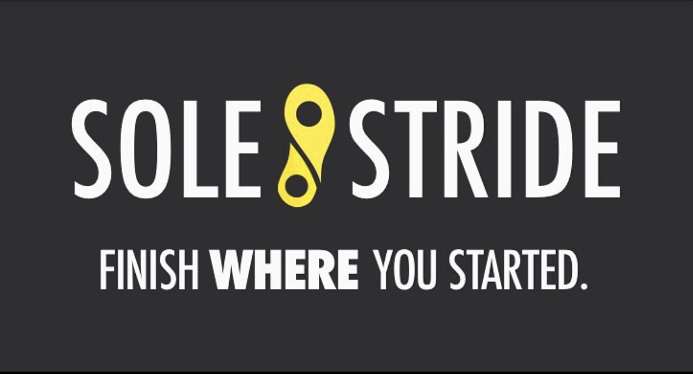
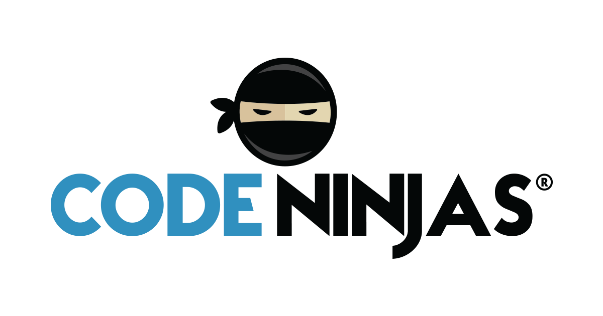

Resume
Latest Work Experiences

Solestride
Software Engineering Intern
Implemented the backend system to generate, store, and retrieve efficient routes for 65 athletes on the University of Michigan Track Team with five other developers
Interacted with Google Maps API to consume routes and location data, transported data between frontend/backend via JSON, placed data in persistent storage (Firebase)
Developed API endpoints usable across iOS and Android platforms to enhance training plans by allowing athletes to analyze their routes and performance
Python
React Native
Google Maps API
Node.JS
Firebase
Javascipt
HTML
CSS

Cantoo
ML/AI Intern
Implemented the backend system to generate, store, and retrieve efficient routes for 65 athletes on the University of Michigan Track Team with five other developers
Interacted with Google Maps API to consume routes and location data, transported data between frontend/backend via JSON, placed data in persistent storage (Firebase)
Developed API endpoints usable across iOS and Android platforms to enhance training plans by allowing athletes to analyze their routes and performance
Python
React Native
FER (Facial Recognition)
Deepgram API
SpaCy (NLP)
Azure

Code Ninjas
Software Development Intern
Collaborated with six developers to identify and alleviate software bottlenecks and critical bug defects to the core application which improved the responsiveness and runtime of user applications by 5X
Created ∼ 200 mini-projects from the ground up using a measured, market-focused approach to streamline the development cycle
Java
C#
Unity
Wwise
Microsoft Azure
Javascipt
HTML
CSS
Stagóna
Product Management Intern
Directed the entire life cycle of the product from ideation to product support including material design, flow rate sensors, Bluetooth, and Arduino usage
Partnered with five non-profit organizations to provide a smart attachable device (Stag 1.0) for faucets and wells that filters water in real-time capable of monitoring usage on both iOS and Android
Conceptualized the full product by collaborating with engineers using CAD to create testable and functional design components, successfully shipped to the manufacturer, and facilitated testing for over 2000 users with limited samples
Python
Flow Rate Sensor
Bluetooth
Arduino Uno
AWS
Javascipt
HTML
CSS
Projects
SillyQL
A ground-up implementation of a relational database with SQL syntax. Implemented in C++ without the use of the STL Data Structures & Algorithms. All data structures written by myself to be compatible with the STL. SillyQL was able to CREATE, INSERT, JOIN, REMOVE, PRINT, and GENERATE INDEX. Through the generate index function, this program explores hash tables.
Office Hours Queue
Constructed a web-based office hours queue used across the University of Michigan with a client-side dynamic front-end to allow users to en/dequeue capable of sending RESTful HTTP requests to a performant C++ backend
Designed a dynamic backend implemented with linked-list and iterators to receive and process API requests from users which enabled professors and teaching assistants to help students with programming assignments
Weather Forecast App
Worked individually to make a high level weather-forecasting app using data from OpenWeather API to output information for the user in a clean, modern interface.
Spent 30+ hours conducting user interviews to collect maximum feedback on various design changes and feature implementations.
Machine Learning w/ Piazza
Using the NLP Bag of Words model, this program created a classifier to determine which thread and/or subject-matter posts on the educational platform Piazza would fall under. The classifer created was a simplified version of the “Multi-Variate Bernoulli Naive Bayes Classifier”.